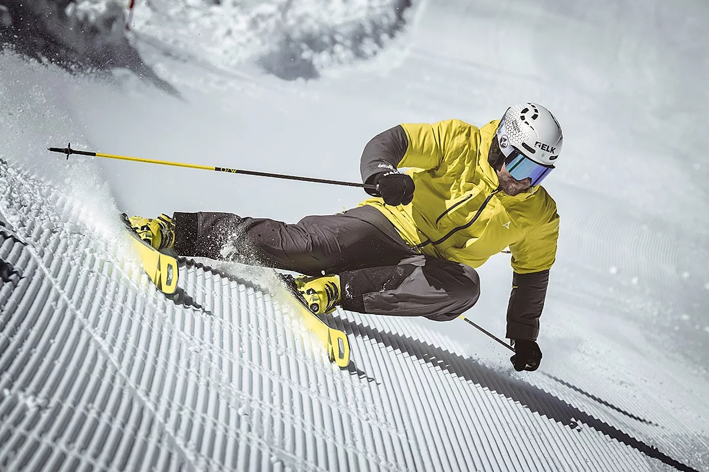

¿Que es Aramón?
Aramón es una sociedad anónima participada a partes iguales por el Gobierno de Aragón e Ibercaja, que gestiona la mayoría de las estaciones de esquí de esta comunidad autónoma. Aramón es el primer grupo empresarial español de turismo de nieve y montaña. El grupo gestiona cinco estaciones: Cerler, Panticosa y Formigal en el Pirineo, y Javalambre y Valdelinares, en el Sistema Ibérico turolense. Constituido en 2002, el Grupo Aramón nació con el objetivo de impulsar el desarrollo económico y social de las comarcas en las que opera, mediante la creación de una oferta de turismo de esquí y montaña moderna e innovadora. Sobre una estrategia de desarrollo a largo plazo, el Grupo Aramón emprendió un plan de inversiones para la mejora y ampliación de sus estaciones con el propósito de desarrollar en las montañas de Aragón un destino turístico de alta calidad, que pudiera convertirse en referente del mercado español.
¿Que servicios ofrece Aramon?
Aramon ofrece servicios diversos para sus distintas estaciones las cuales son:
- Formigal
- Panticosa
- Jalambre